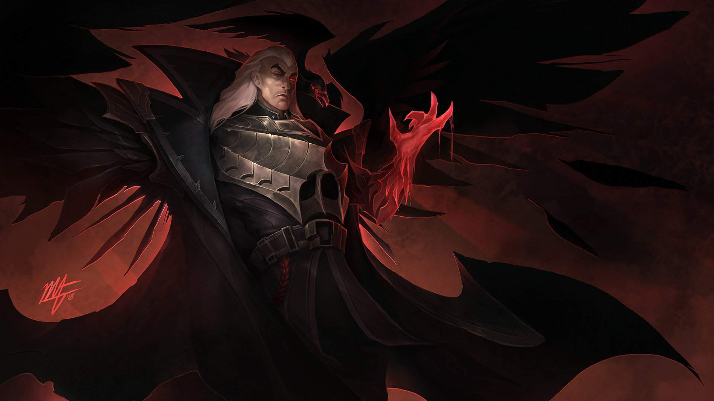

Джерико Свейн – дальновидный правитель Ноксуса, нации, которая стремится к завоеваниям и уважает только силу. В войне с Ионией он был разбит и искалечен, но все же сумел решительно и безжалостно захватить власть над империей. В этом ему помогла демоническая левая рука, заменившая ту, которую он потерял на войне. Теперь Свейн лично ведет свои войска в бой, бесстрашно маршируя навстречу грядущей тьме, которую не видит никто, кроме него – тьме в глазах призрачного воронья, кружащего над трупами. Но главный секрет в этом вихре жертв и тайн заключается в том, что главный враг и есть он сам.